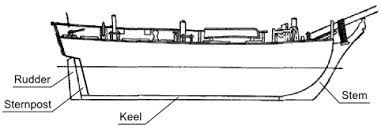

The front-most part of the boat or ship’s bow is termed as the Stem of the ship.
The keel itself is extended up to gunwale to form the curved edge called the ship’s stem.
These stems can be of two styles viz. raked and plumb stems, where the former is inclined at some angle to the waterline and later is perpendicular to the waterline.
